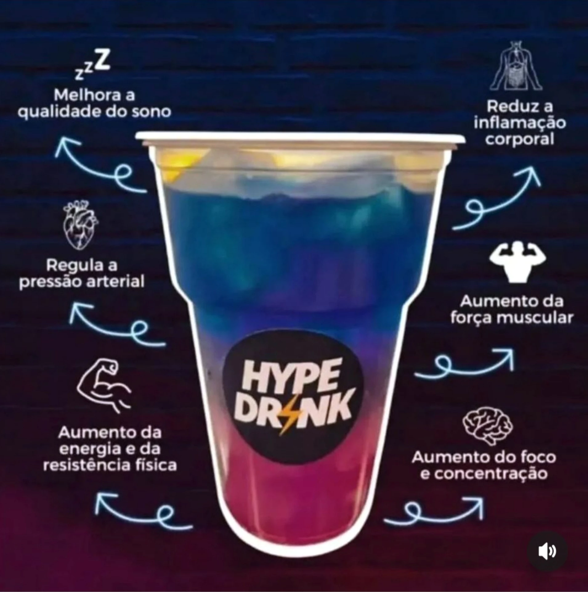

Preparando a sua Melhor Versão
O Hype Drink é uma bebida refrescante e nutritiva que integra componentes avançados para foco, bem-estar e energia celular.

O Segredo dos Ingredientes Chave:
🔋 Liftoff: Proporciona suporte cognitivo, foco e concentração integrados.
🍵 Herbal Concentrate (Aromático) ou N-R-G: Contribui com o metabolismo e estímulo de disposição corporal.
🏃♂️ CR7 Drive: Auxilia na reidratação ideal e repõe sais minerais cruciais.
Como Preparar seu Hype Drink (5 Passos Simples)
- Escolha o recipiente de elite: Use um copo esportivo de 550ml a 600ml.
- Adicione gelo: Complete com bastante gelo para um frescor vibrante.
- Faça a base: Adicione cerca de 250ml de água purificada (natural ou gaseificada).
- Integre seus suplementos: Adicione as dosagens conforme prescrição técnica do seu consultor.
- Homogeneíze: Agite moderadamente ou misture até diluir por completo.
Deseja ver a planilha de modelagem comercial para expansão?
Acesse nossa Tabela de Investimento e Retorno Financeiro